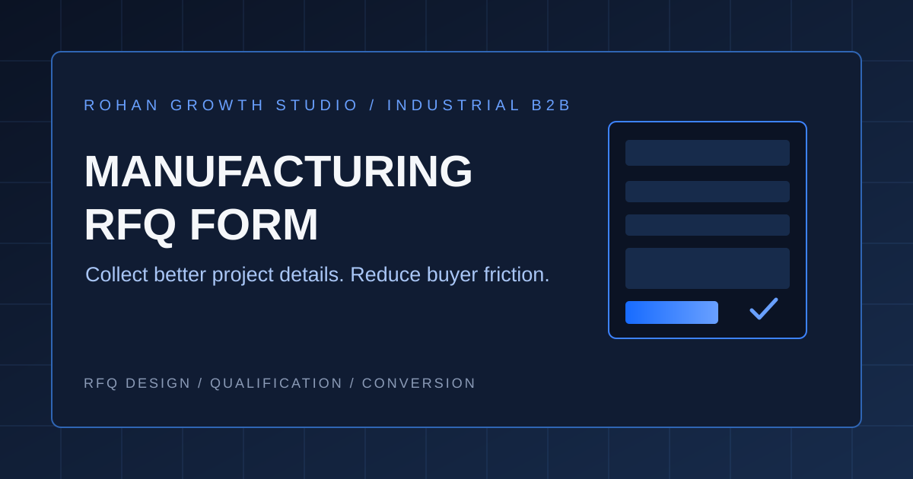

Manufacturing SEO
Link Building for Manufacturers: Earn Quality Backlinks Without Buying Spam
A practical guide to earning relevant industrial links, building technical content assets and auditing suspicious backlinks.
READ ARTICLEOriginal guides, field notes, and research on manufacturing SEO, industrial websites, AI workflows, and the systems behind sustainable digital visibility.
Browse practical research by the business problem you want to solve.
Keyword research, technical SEO, GEO, indexing, and structured content for industrial B2B websites.
EXPLORE TOPIC ↗Website architecture, capability pages, technical proof, user experience, and RFQ conversion.
EXPLORE TOPIC ↗LinkedIn, technical storytelling, social proof, and content repurposing for industrial buyers.
EXPLORE TOPIC ↗Practical AI workflows for translation, export sales, document handling, and team productivity.
EXPLORE TOPIC ↗Company profiles, export marketing priorities, pilot projects, and long-term digital assets.
EXPLORE TOPIC ↗More English topic collections will appear as new guides are published. 中文知识库已提供更多本地化内容。
Practical guides, tutorials, and original insights for industrial B2B growth.
19 articles
Search supports English and Chinese keywords
A practical guide to earning relevant industrial links, building technical content assets and auditing suspicious backlinks.
READ ARTICLE
A practical guide to RFQ fields, process-specific questions, secure drawing uploads, form usability, and qualified inquiry tracking.
READ ARTICLE
An integrated growth system connecting industrial websites, SEO, LinkedIn, communities, AI search, paid media, and qualified RFQs.
READ ARTICLEA practical guide to AI retrieval, manufacturing capability content, brand entities, third-party signals, and AI search visibility.
READ ARTICLEA practical framework for buyer search intent, keyword mapping, capability pages, technical SEO, and qualified inquiries.
READ ARTICLE
Use buyer-focused FAQs to capture long-tail demand, clarify technical boundaries, and support SEO, GEO, and answer discovery.
READ ARTICLE
Test positioning, website pages, and content with a small pilot before scaling manufacturing export marketing investment.
READ ARTICLE
A human-reviewed workflow for engineering terminology, drawings, BOMs, specifications, and quality documents.
READ ARTICLE
Practical AI workflows for translation, RFQ triage, customer emails, meeting notes, and reusable manufacturing knowledge.
READ ARTICLE
Turn company profiles into buyer-focused capability stories with technical proof, project fit, and differentiation.
READ ARTICLE
Replace generic claims with process details, specifications, quality evidence, FAQs, and clear buyer actions.
READ ARTICLE
Apply AI to prospect research, RFQ replies, technical explanations, and follow-ups with human review.
READ ARTICLE
Build a website that helps buyers assess technical fit, verify trust, and take the next step.
READ ARTICLE
Explain machine capabilities, process range, quality controls, applications, and customer value.
READ ARTICLE
Understand the different roles of owned websites and social channels for small export teams.
READ ARTICLE
Understand how SEO, generative search, and answer-focused content share a common foundation.
READ ARTICLE
Repurpose factory imagery into equipment, process, quality, application, and engineering insight content.
READ ARTICLE
Build industrial social content around process knowledge, quality control, and credible project evidence.
READ ARTICLE
Explain application, process decisions, quality control, and project capability—not just finished-part photos.
READ ARTICLENo matching articles found.
Try another keyword or select a different topic.
Explore RGS solutions or share your website and materials for a practical review.